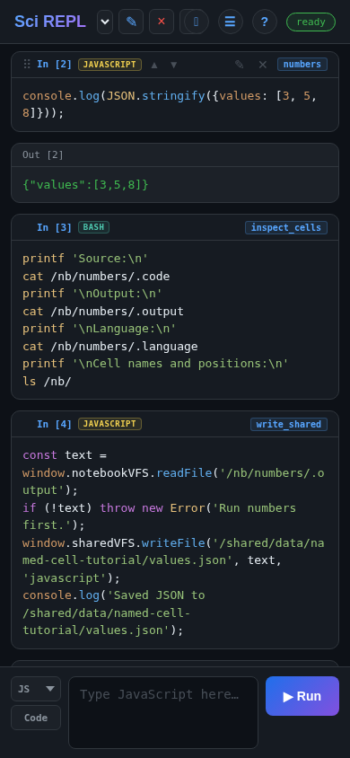
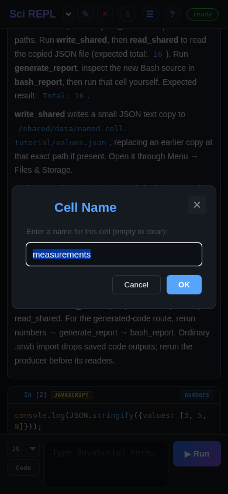
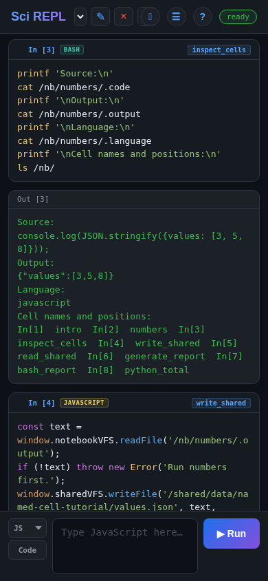
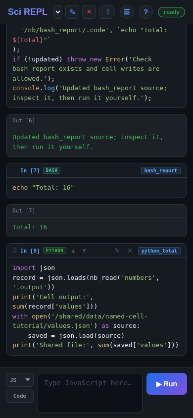

Learn by doing
Name cells and connect programs
A cell can have a useful name such as numbers, instead of being known only by its position. Other cells can read its latest text output through /nb/numbers/.output, or exchange data through an ordinary file in /shared/. Try both routes with JavaScript and Bash, then generate a small Bash program in another cell—without automatically running the generated code.
The walkthrough and screenshots were checked in the SciREPL Free browser build on . These are complete narrow-browser captures, not Android screenshots. Pro and every released version have not been checked for this guide. The main exercise uses bundled JavaScript and Bash: no packages, model calls, or runtime downloads are needed. Python is an optional last step.
What “paths” means here: /nb/ is a virtual view of the currently selected workbook's cells, available to programs. It is not a folder in Android's Downloads, and it is not a separate “Path View” screen. The checked Free version's Files & Storage screen does not browse /nb/; later we deliberately copy some data into a shared file that the screen can show.
Step 1
Import the example without running it
- Download the named-cell example workbook (.srwb). Save the file itself and keep its
.srwbextension. If the browser shows text, use its save/download action. - In SciREPL's top header, find ☰ Menu—the button with three horizontal lines. Open it and choose 📂 Import File (e.g. .srwb, .ipynb, .csv, .py, .zip). Scroll inside the menu if necessary.
- Select
named-cell-interop.srwbin your device's file picker. Exit the menu if it stays open, then select the new Named Cell Interop tab in the workbook selector. The selector's ▾ arrow is near the app title. Your existing workbooks remain. - Read the introduction, then find the seven code cells named
numbers,inspect_cells,write_shared,read_shared,generate_report,bash_report, andpython_total. They are already named so you can follow the exercise.
Import is not Run. Ordinary .srwb import does not execute code, even when auto-execute is enabled. Do not choose Run All Cells for this lesson: the order matters, and the last Python cell is optional. Inspect unfamiliar code before running it.
Need the download and picker steps in more detail? Use the manual workbook import walkthrough. To follow this lesson, keep Named Cell Interop selected: /nb/ refers to the active workbook, not to every open tab.
Step 2
Find and change a cell's name
A saved code cell has an In[…] prompt label in its own header, and a named cell also shows its name. This is the label to use for naming—not the ✎ pencil, which edits the cell's source. The displayed number identifies the saved card; after reordering, it need not match the cell's current position in a /nb/In[N]/... path. Prefer names for references.

numbers appears at the right. This browser capture shows the output after Step 3; on desktop, hover over the card to reveal its controls.- Find
numbers. On desktop, double-click its In[…] label. On a touch device, press and hold that label. A single click is not the naming gesture in the checked build. - In the dialog, replace
numberswithmeasurements, then confirm with OK. The name in the cell header changes; the source and language do not. - Open the same dialog again and change the name back to
numbers, then choose OK. The next cells use that name, so restore it before continuing.

/nb/numbers/.output would need to change too if you kept the new name.Choose distinctive, simple names such as cube_moves or check_moves. Names must be unique inside the workbook; they cannot contain /, start with ., or be a reserved positional label such as In[2]. Emptying the name removes it.
This is why a tutorial can say “Run cube_moves, then check_moves”: those are cell names to find in the workbook, not files you must download separately. Names are better references than positions when you insert or move cells.
Step 3
Run the cell that produces data
Find numbers. Tap its own ✎ pencil, inspect the source, and check that the cell is Code → JS - JavaScript. Then use that saved cell's ▶ Run button—not the new-cell panel, which adds another cell.
Pro shortcut: you can also open a saved cell's editor by double-tapping the cell's source text in Pro. The ✎ pencil works in both editions. This editing shortcut is different from double-clicking or long-pressing the In[…] label to change its name.
console.log(JSON.stringify({values: [3, 5, 8]}));Expect this one-line output:
{"values":[3,5,8]}The result is JSON text. Its structure makes it easier for another language to read than a prose message. We are not passing a live JavaScript object or sharing JavaScript variables with Bash or Python.
Step 4
Read a cell through the virtual filesystem
The virtual directory for numbers has dot-prefixed properties. A path combines the workbook mount, the cell identifier, and the property you want:
/nb/ current workbook's cells
└── numbers/ this named cell
├── .code source text
├── .output latest text output
├── .language javascript
├── .type code
└── .name numbers| Property | What reading it gives you |
|---|---|
.code | The current source, whether or not that source has run. |
.output | The last text output. It is read-only: execution supplies it. It can be empty or out of date. |
.language | The stored language identifier, such as javascript or bash. |
.type | The cell type, such as code or markdown. |
.name | The assigned name, or empty text if the cell is unnamed. |
Now open the ✎ pencil on inspect_cells, check Code → Bash, and run it. This reads the producer's source, its JSON output and its language, then lists the current workbook's cell identifiers. It does not write or change any cells or files.
printf 'Source:\n'
cat /nb/numbers/.code
printf '\nOutput:\n'
cat /nb/numbers/.output
printf '\nLanguage:\n'
cat /nb/numbers/.language
printf '\nCell names and positions:\n'
ls /nb/
cat paths. These paths address workbook data; no Android shell or physical phone folder is involved. Browser capture of SciREPL Free.Names, positions and relative references
The same cell can also be addressed by its current 1-based position, for example /nb/In[2]/.output means the second cell in the current order. Count Markdown cells too. This is not a permanent card id: after reordering, the printed In[…] number can differ from the position used by this path. Position references change meaning when you reorder or insert cells; name references keep identifying the named cell.
Bash and JavaScript also support references relative to the executing cell: /nb/-1/.output means the previous cell, and /nb/./.code means the current cell. They require an execution context and depend on cell order. This tutorial uses explicit names instead; it does not rely on relative references behaving identically in every language.
Step 6
Generate another cell's code, then run it yourself
So far Bash has read JavaScript output. Now JavaScript will use that same JSON text to calculate a total, and write a short Bash program into the existing bash_report cell. Writing code and running code are two separate actions.
numbersRun → JSON textgenerate_reportRead JSON → write Bash sourcebash_reportInspect → run manually
This write replaces source. Use the companion's scratch bash_report cell, not a cell with work you need to keep. Make a backup before trying source writes in your own workbook. Do not overwrite the generator itself or change .language programmatically in this exercise.
- Check that
bash_reportexists and its language is Bash. Its initial source is shown below; do not run it yet. - Open ☰ Menu → Settings → Notebook VFS. Allow cells to modify other cells must be checked for the generator's write. It is on by default in the checked build, but check your setting. You do not need to enable cross-notebook reads, cross-notebook writes, or programmatic execution. Close Settings.
- Open the ✎ pencil on
generate_report, check Code → JS - JavaScript, and run it.
const text = window.notebookVFS.readFile('/nb/numbers/.output');
if (!text) throw new Error('Run numbers first.');
const data = JSON.parse(text);
const total = data.values.reduce((sum, value) => sum + value, 0);
const updated = window.notebookVFS.writeFile(
'/nb/bash_report/.code', `echo "Total: ${total}"`
);
if (!updated) throw new Error('Check bash_report exists and cell writes are allowed.');
console.log('Updated bash_report source; inspect it, then run it yourself.');The target starts with this placeholder:
echo "Run generate_report first"After the generator succeeds, bash_report's source becomes echo "Total: 16". The write has not run Bash. Open that cell's ✎ pencil to inspect the new source, then tap its own ▶ Run. Expect Total: 16.

readFile(...) returns text; an unknown cell or property returns null. writeFile(...) reports whether the write succeeded. The checks in the generator stop it if the producer has no output or the destination cannot be written. Names are case-sensitive: keep the exact spellings.
Step 7
Change the data and refresh each dependent step
- Edit
numberswith its ✎ pencil. Change[3, 5, 8]to[4, 5, 8], then run that cell. Its JSON now contains4. - Look at
bash_reportbefore running anything else. Its earlier source and output remain unchanged: there is no automatic dependency refresh. - Rerun
generate_report. This changes the report's source toecho "Total: 17", but its oldTotal: 16output can remain visible. - Inspect and rerun
bash_report. Now its output isTotal: 17. - Before refreshing the file, rerun
read_shared: it still shows16from the older JSON copy. Now rerunwrite_shared, thenread_shared; the file route also shows17. Reopenvalues.jsonin Files & Storage to inspect the changed file.
Source, output and copied files are different things. Finish an open source edit with that cell's ▶ Run before its consumers; an unsaved editor draft is not the stored .code. A source write does not execute the destination, and a copied file does not follow later changes. Follow the explicit order: producer → generator → report. Visible old output is not proof that the current source has run.
Export the workbook to keep your source edits and names. Ordinary .srwb import currently drops saved code outputs, so after reopening, rerun numbers before its readers, then the generator and report. Separate shared data files require a file or package export. See the files and export reference.
Optional
Read both routes from Python
You can stop here without starting Python. To try a third language, first run numbers and write_shared, then inspect and run python_total as Code → Python:
import json
record = json.loads(nb_read('numbers', '.output'))
print('Cell output:', sum(record['values']))
with open('/shared/data/named-cell-tutorial/values.json') as source:
saved = json.load(source)
print('Shared file:', sum(saved['values']))Expect Cell output: 16 and Shared file: 16 for the original data, or 17 in both lines after refreshing both routes in Step 7. Python's nb_read('numbers', '.output') reads the named cell's last text output. The separate open(...) reads the shared file using normal Python file syntax. The standard json module parses both; no %pip install is needed. If only the producer was refreshed, the two totals can differ.
On first use, Python may need to initialize or download its runtime. A privacy/network notice may appear depending on your build and existing consent; read it before agreeing. This optional step is not required for the JavaScript/Bash exercise, and importing the companion alone does not start Python.
Continue exploring
Recognize the pattern in other workbooks
Named cells provide a simple interoperation boundary: one program produces text, another reads it or uses it to generate source. The catalogue already has larger examples to inspect:
- Life Expectancy Analysis reads ordinary CSV files from
/shared/data/in Python and R: the shared-file route, not named-cell reads. It downloads datasets and uses packages; read its setup and consent requirements before running it. - Prolog Generates R reads named Prolog source with
nb_read(..., '.code', ...)and writes generated R source withnb_write('r_factorial', '.code', ...). The R cell is run separately. - Prolog Generates TypR combines generated definitions with a named source-only query cell, then writes
typr_output. A#!sourcecell is readable as source without executing it.
Search these titles in ☰ Menu → Browse Packages…. They are further reading, not certified execution walkthroughs for this guide; the available edition and setup needs differ. The Prolog-generates workbooks require the unifyweaver-scirepl dependency installed through Browse; importing a raw workbook alone does not install that dependency. For a manually imported .ipynb, first check Menu → Settings → Import & Editing → Auto-execute cells on workbook import is off, since Jupyter imports can execute code under that setting. See the Browse walkthrough and the manual import guide.
If something looks wrong
Check the name, workbook and run order
- The naming dialog does not open: double-click or long-press the saved cell's In[…] label, not its source, output or pencil. A single click is not the naming gesture.
- The producer cannot be found: keep Named Cell Interop selected, restore the exact name
numbers, and check spelling and letter case. Renaming does not rewrite paths in other cells. - The generator says “Run numbers first”: inspect and run
numbers. Importing or merely editing its source does not populate.output. - JSON parsing fails: compare the producer with the complete example. Its output must be JSON only, not a heading or extra printed message.
- The report could not be written: check that the existing
bash_reportcell is in this workbook and that Allow cells to modify other cells is checked. Do not enable programmatic execution to solve a source-write problem. - The report is still 16: after editing data, run
numbers, thengenerate_report, thenbash_report. Refresh the copied file separately withwrite_shared, then rerunread_shared. - You cannot find /nb in Files & Storage: that screen shows shared files, not this virtual cell mount in the checked build. Run
write_sharedand look for its deliberatevalues.jsoncopy instead.
The first-workbook interface tutorial explains the header and saved-cell pencil; the graphics tutorial shows other ways a cell can produce a result.